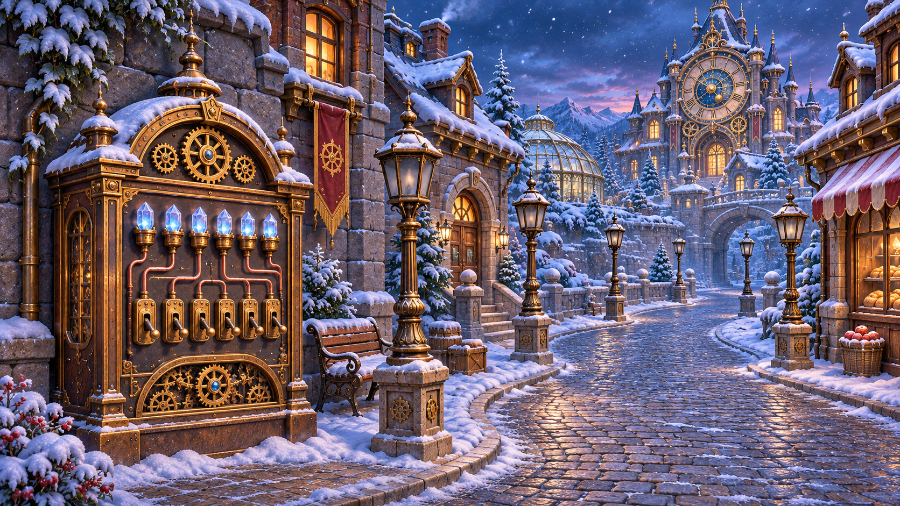
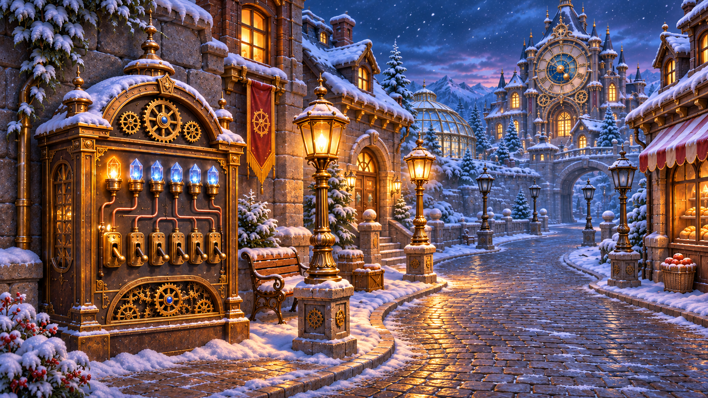
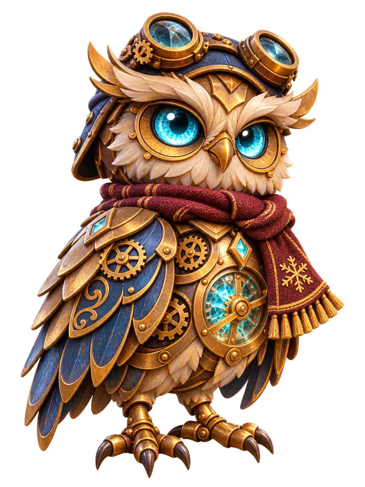

✨ Выбери открывшийся день на карте или в календареОГЭ
Декабрь в Хронбурге
24 испытания • 25–30 декабря — праздничные события • 31 декабря — эпилог
1 декабряОГЭ


0 из 6 фонарей
✦ Финальный замок Искры времени
Все фонари горят. Осталось решить последнее испытание, чтобы получить Искру времени и золотой фонарик.
День 1. Огонёк надежды

Тик: Все фонари погасли! Реши три математические загадки, чтобы вернуть свет на улицы Хронбурга.
Нажми на щит или первую секцию, чтобы открыть задание. После верного ответа окно закроется, и загорятся два фонаря.
Три секции сети · по два фонаря в каждой · прогресс сохраняется автоматически
✦ Математическое испытание
Задание 1 из 3
Запусти первую пару фонарей
Каждый верный ответ зажжёт два фонаря.
✦ Первый свет Хронбурга возвращён!
Тик: «Слышишь? Механизмы снова работают! Это первая искра, а до Нового года впереди ещё столько чудес».
Золотой фонарик
Первая Искра времени · Памятная игрушка для ёлки · День 1 завершён
Хронбург · Прототип 0.4 · 2026 · Дата на устройстве используется лишь для визуального календаря. Защищённое расписание публикаций будет настроено отдельно.